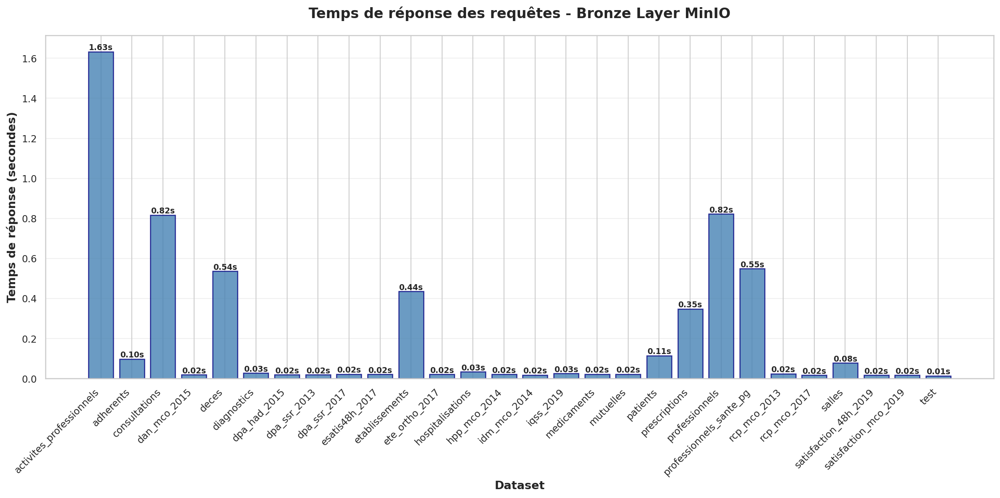
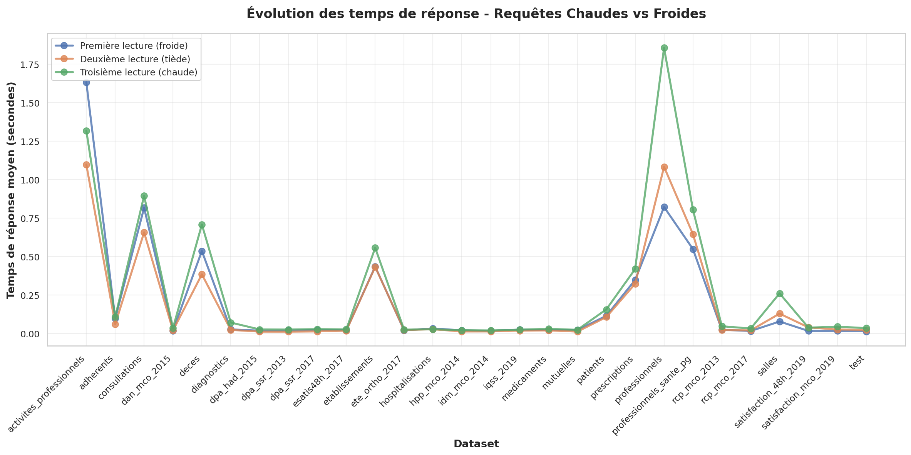
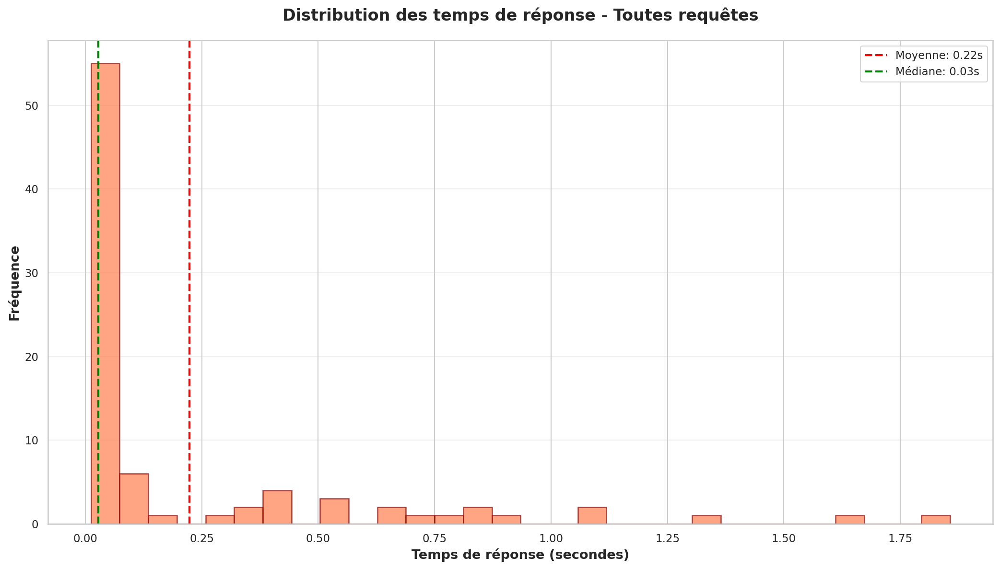
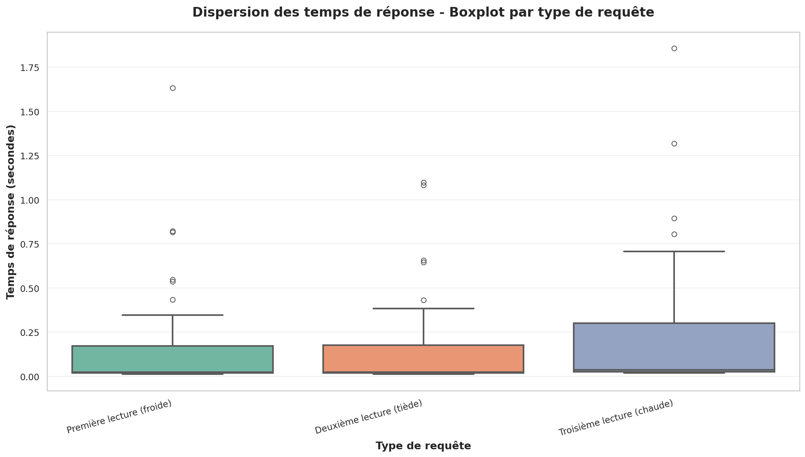
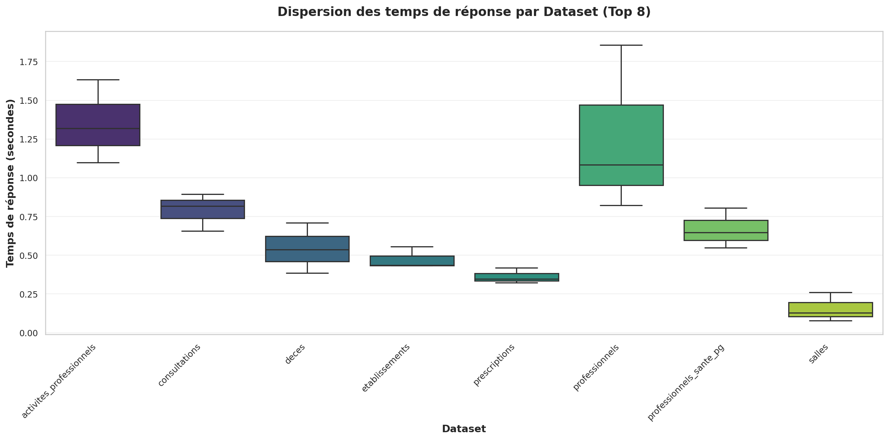
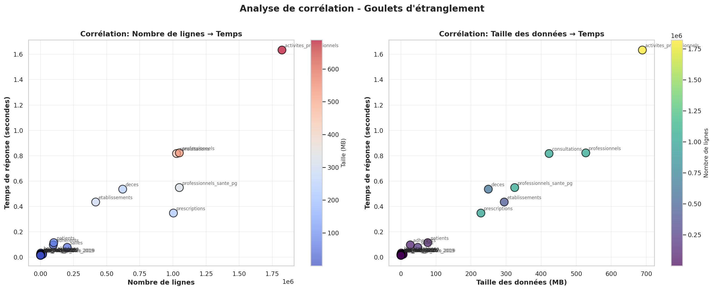
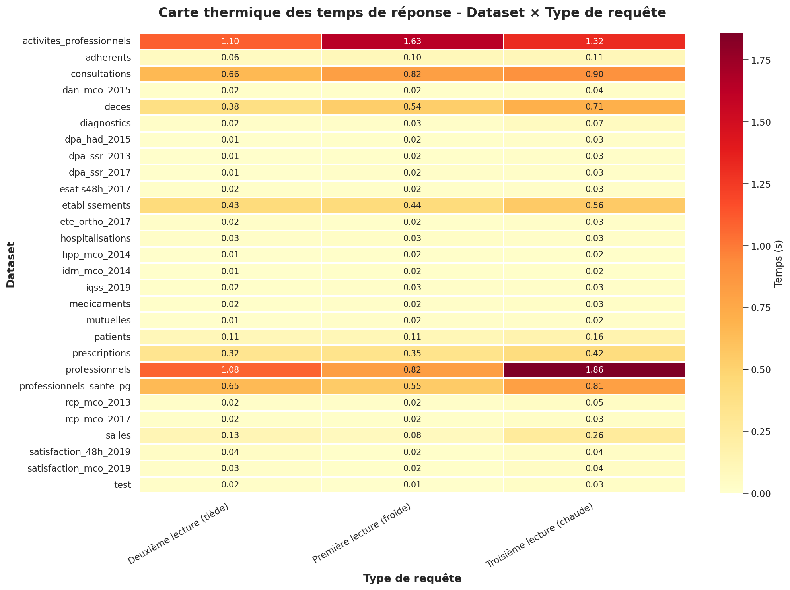
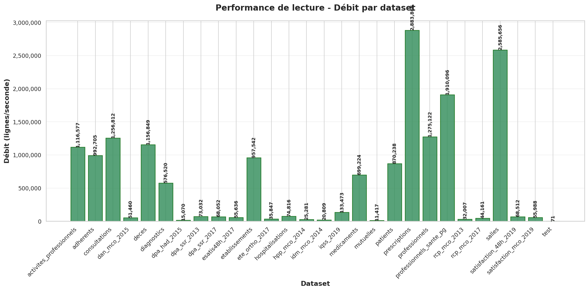
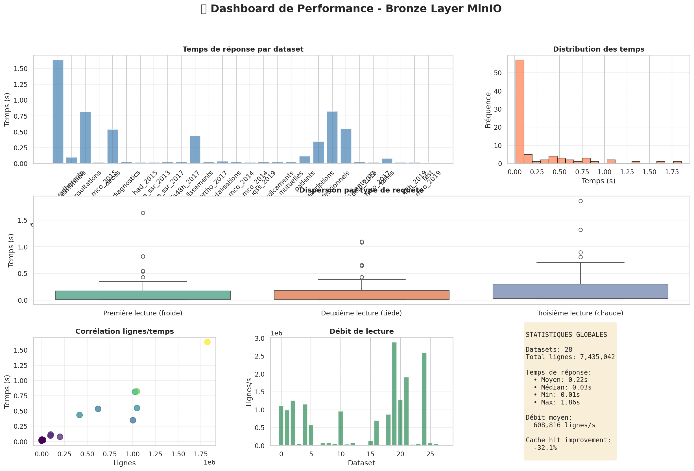

Analyse de la couche Bronze - 23/10/2025 à 11:54

Diagramme en barres montrant le temps de réponse de chaque dataset. Permet d'identifier rapidement les datasets les plus lents.

Graphique en courbes comparant les performances des requêtes chaudes (en cache) vs froides (première lecture). Essentiel pour évaluer l'efficacité du cache.

Histogramme de la distribution des temps avec moyenne et médiane. Permet de comprendre la variabilité et détecter les anomalies.

Boxplot montrant la dispersion des temps pour chaque type de requête. Identifie les valeurs aberrantes et la stabilité des performances.

Boxplot comparant la dispersion entre datasets (Top 8). Évalue la cohérence des performances sur plusieurs lectures.

Scatter plots montrant la corrélation entre volume de données et temps de réponse. Identifie les goulets d'étranglement et datasets mal optimisés.

Heatmap visualisant la latence par combinaison dataset × type de requête. Repère rapidement les patterns de performance.

Barres montrant le débit en lignes/seconde. Compare l'efficacité de lecture entre datasets.

Vue d'ensemble complète avec 6 panneaux : temps, distribution, dispersion, corrélation, débit et statistiques. Synthèse globale de la performance.